大业股份 · 已闭环
-425.83元 · 含费成本收益率 -10.84%
数量200股；含费买入成本3,928.04元，卖出净回款3,502.21元。
10月30日19.61元、19.57元各买100股；11月2日17.57元分两次各卖100股。这是跨周整笔交易损失，含上周成本，不等于11月2日账户当日亏损。本人反思：绕异动博弈仓位过重，把非主模式当作主模式处理。
对应纪律：非主模式不能取得主模式仓位豁免；先核交易逻辑与风险边界。
全周8笔成交 · 周四清仓 · 周五空仓
交割已补齐 · 全周收益按交割估算已补入11月2日至5日成交和10月30日跨周参考，保留所有个人反思与学习心得。
本周账户收益估算-1,480.39元，期末现金10,319.97元。周五无成交，按无额外出入金估算当日收益为零。
我复盘闽发铝业五板，第一问不是“板烂不烂”，而是“今天最强的题材是不是光伏？”题材级别是首要判断。要看前排一字、中位托举、后排首板能否相互印证，而不是只凭闽发一只票的涨停倒推板块强度。
风控：先定仓位上限和不做的条件。定龙：确认最强题材里的唯一核心，同身位还在竞争就等。买点：如果当时已判定光伏最强、闽发地位已定，且五板分歧换手的成交量符合预案，大单开始回封就是我的执行点，不再等封死。卖点：先写明转强预期；板块不再回流、个股承接低于预期，就按退出预案处理。
周五实际是排单未成交。这是闽发五板错过机会的复盘，不是补记一笔买入。
11月2日–6日 · 我的周总结
回看大业股份，我把监管后的反弹当成了可以反复做的机会。我的原则是少做；真要做，只做监管函首日第一次反核上板确认，最多两成仓；次日是退出日，不是再找一次买点。严重异动不套用这个规则。监管参与边界
题材走到补涨阶段，不等于上海沪工就是补涨龙。按我这次的判断，它连补涨龙都算不上。即便地位成立，我要做的也是三板确认，不是四板追入。这次四板去接，当天受损，次日又受损；想扳回大业那笔，更不能成为加仓理由。上海沪工操作回看
我没有做光伏新题材，转去做文化传媒内部的竞争。文投的地天板有辨识度，但不证明它已经胜出。后来浙文影业走到五板，是事后才知道的结果。低位能不能卡掉高位，要等板上确认；同身位PK未决，不抢先手。这笔仓位控制得轻，限制了风险，但不能把提前下注算成做对。同身位PK复盘
这次不是选错，也不是买亏：我看到了回封，但排慢一步，没有成交，周五仍是空仓。下次要提前写好什么量能、什么压单变化算确认；当大单开始回封、原有条件仍成立时，按预案排，而不是封住后才临时决定。查看回封时点与盘口对照
来源：本周交割表与近一周成交截图（逐笔核对）。本周8笔、3只股票；10月30日5笔仅作跨周参考。
按10/30实际成交及大业收盘价19.52元还原期初权益11,800.36元；逐日使用实际发生金额与不复权收盘价估值，假设无遗漏持仓或非交易出入金。11/5卖出文投后全部清仓；周五无成交、空仓，按无额外出入金延续前日现金。
周四现金：8,461.92＋1,858.05＝10,319.97元。三只股票的完整闭环含费损失为1,504.43元，其中大业的24.04元浮亏已在上周期末权益中体现，所以本周账户损失为1,480.39元。
| 日期 | 操作 | 现金 | 收盘持仓 / 价格 | 日收益（估） | 日收益率（估） | 日末仓位 | 日末权益（估） |
|---|---|---|---|---|---|---|---|
| 11-02 周一 | 4笔：上海沪工买入100股；上海沪工买入100股；大业股份卖出100股；大业股份卖出100股 | 7,526.53 | 上海沪工200股 × 17.30 | -813.83 | -6.90% | 31.49% | 10,986.53 |
| 11-03 周二 | 1笔：上海沪工卖出200股 | 10,639.94 | 空仓（按可见成交） | -346.59 | -3.15% | 0.00% | 10,639.94 |
| 11-04 周三 | 2笔：文投控股买入400股；文投控股买入400股 | 8,461.92 | 文投控股800股 × 2.47 | -202.02 | -1.90% | 18.93% | 10,437.92 |
| 11-05 周四 | 1笔：文投控股卖出800股 | 10,319.97 | 空仓（按可见成交） | -117.95 | -1.13% | 0.00% | 10,319.97 |
| 11-06 周五 | 无成交 · 空仓 | 10,319.97 | 空仓（按可见成交） | 0.00 | 0.00% | 0.00% | 10,319.97 |
11月5日（周四）：09:38:02 文投控股卖出800股，净回款1,858.05元。前日权益10,437.92元，清仓后现金10,319.97元，当日收益 -117.95元（-1.13%）；不是这笔交易从买入到卖出的全部亏损。
| 日期 | 时间 | 证券 | 操作 | 数量 | 成交均价 | 成交金额 | 发生金额（含费） | 资金余额 |
|---|---|---|---|---|---|---|---|---|
| 11-02 | 09:47:14 | 上海沪工 603131 | 买入 | 100 | 19.310 | 1,931.00 | -1,936.02 | 5,960.34 |
| 11-02 | 09:48:19 | 上海沪工 603131 | 买入 | 100 | 19.310 | 1,931.00 | -1,936.02 | 4,024.32 |
| 11-02 | 13:10:49 | 大业股份 603278 | 卖出 | 100 | 17.570 | 1,757.00 | +1,751.11 | 5,775.43 |
| 11-02 | 14:51:44 | 大业股份 603278 | 卖出 | 100 | 17.570 | 1,757.00 | +1,751.10 | 7,526.53 |
| 11-03 | 09:32:51 | 上海沪工 603131 | 卖出 | 200 | 15.600 | 3,120.00 | +3,113.41 | 10,639.94 |
| 11-04 | 09:32:56 | 文投控股 600715 | 买入 | 400 | 2.710 | 1,084.00 | -1,089.01 | 9,550.93 |
| 11-04 | 09:33:41 | 文投控股 600715 | 买入 | 400 | 2.710 | 1,084.00 | -1,089.01 | 8,461.92 |
| 11-05 | 09:38:02 | 文投控股 600715 | 卖出 | 800 | 2.330 | 1,864.00 | +1,858.05 | 10,319.97 |
买入成交额6,030.00元；卖出成交额8,498.00元；实际费用44.39元。现金净变化+2,423.61元不是账户利润。
| 日期 | 时间 | 证券 | 操作 | 数量 | 均价 | 含费发生金额 | 资金余额 |
|---|---|---|---|---|---|---|---|
| 2026-10-30 | 13:12:12 | 襄阳轴承 | 卖出 | 400 | 19.260 | +7,695.15 | 7,979.33 |
| 2026-10-30 | 13:20:35 | 襄阳轴承 | 卖出 | 100 | 19.240 | +1,918.04 | 9,897.37 |
| 2026-10-30 | 13:22:13 | 襄阳轴承 | 卖出 | 100 | 19.330 | +1,927.03 | 11,824.40 |
| 2026-10-30 | 14:11:27 | 大业股份 | 买入 | 100 | 19.610 | -1,966.02 | 9,858.38 |
| 2026-10-30 | 14:14:28 | 大业股份 | 买入 | 100 | 19.570 | -1,962.02 | 7,896.36 |
-425.83元 · 含费成本收益率 -10.84%
数量200股；含费买入成本3,928.04元，卖出净回款3,502.21元。
10月30日19.61元、19.57元各买100股；11月2日17.57元分两次各卖100股。这是跨周整笔交易损失，含上周成本，不等于11月2日账户当日亏损。本人反思：绕异动博弈仓位过重，把非主模式当作主模式处理。
对应纪律：非主模式不能取得主模式仓位豁免；先核交易逻辑与风险边界。
-758.63元 · 含费成本收益率 -19.59%
数量200股；含费买入成本3,872.04元，卖出净回款3,113.41元。
11月2日09:47:14、09:48:19以19.31元各买100股；11月3日09:32:51以15.60元卖出200股。本人反思：未定龙抢板、第二笔缺少新增确认，并带有扳回大业错误的动机。
对应纪律：先定龙再参与；加仓必须有新增依据，上一笔亏损不是下一笔的理由。
-319.97元 · 含费成本收益率 -14.69%
数量800股；含费买入成本2,178.02元，卖出净回款1,858.05元。
周三2.71元分两笔买入800股，周四09:38:02以2.33元全部卖出。次日净回款1,858.05元。本人反思：同身位PK未决就抢先押注。
对应纪律：等同身位胜负明确，再按预案判断；轻仓不能代替地位确认。
周一至周四的成交已对齐，周五本人确认空仓。截图余额被截断的末位按上一笔余额与实际发生金额推算，未将交割截图公开。资产与收益为交割估算，不是券商确认日表。
11月6日最新确认 · 本人本周新增口述及明确答复；仅更新个人复盘纪律，不新增交易或市场事实。
先确立地位，再看参与节点；仓位上限不是必须用满，也不能代替买点确认。
本人这次明确按补涨龙定位上海沪工。后续复盘重点放在补涨地位是否已经确认、是否处于三板参与窗口，以及第二笔是否突破仓位上限；不将补涨龙等同于题材主升龙。此前扳回大业股份亏损的动机和加仓反思继续保留。
本周总结修正：上海沪工处于补涨阶段，不代表它已成为补涨龙；四板也不在我的买点内。回到本周总结
参与条件：仅研究三板阶段、补涨龙地位已经确认的机会；同身位PK未决不参与。四板及以上不再新开仓，不把三板提前押注当作定龙。
仓位上限：最高两成仓（20%），不能按题材主升龙配置半仓或更大仓位。
退出安排：剩余高度有限，按预案兑现；本次未指定统一的卖出板数，不额外编造。
“还有空间、至少有溢价”是本人对参与价值的预期，不代表三板买入必有溢价。
参与条件：只参与已确认地位、符合计划的切换机会；不是因买不到前排而临盘替代。
仓位上限：最高两成仓（20%）。补涨与切换仍共同占用既有两成额度，不理解为各自另加两成。
退出安排：按预期管理及事先写明的失效条件处理，不为扳回上一笔亏损临时延长持有。
这是本次对原“一成及以下”限制的修订；PK未决不得入场的规则不变。
参与条件：原则上少做；若做，仅限监管函首日第一次反核上板确认；不能把进入严重异动、泛泛的绕监管或后续反复博弈混入本规则。
仓位上限：最多两成仓（20%），是上限，不是目标；可以不做。
退出安排：第一天参与，第二天马上退出，快进快出；不继续套用首日逻辑反复参与。
大业股份、立新能源为本人提出的回看案例。函件类型、发布日期与对应成交尚未在本模块逐项核实，不据此认定历史交易已满足条件。
11月6日最新确认优先：合格补涨、切换的上限由一成修订为两成；监管反核改为少做，仅在监管函首日第一次反核上板确认时考虑，最多两成仓。此前的半仓上限作废；严重异动不适用。
我们认为上海护工是补涨的龙，所以补涨只有3板能进，补涨仓位不能上太大，两成仓最多半成仓都不要上。补涨和切换两成仓，这是最多的情况下，而且只有监管第一天，第一次监管上板的时候，你能去做像大业股份那种监管，他发监管函，不是进严重异动，像之前利新能源也是监管只有第一天能做：第一天做完后，第二天马上出，快进快出是监管的做法。补涨只有三板能做，因为确定了补涨龙的地位后，上面的高度还有一点点，至少有溢价你可以做，但400开始就不要做，一定要确立地位，不监管的仓位可以上到半仓没关系，但是补涨的仓位就是两层仓是最多的。
本人最新修订：监管反核要少做；如果做，必须第一天做，且仓位最多两成。
上海护工统一为上海沪工，利新能源统一为立新能源，400按上下文整理为四板；两成仓口误以反复强调的20%为准，原话中的半仓说法已被最新两成上限取代。
11月6日 · 本人竞价预期管理心得与历史案例
我先比较两个价格：今天的开盘价是否严格高于昨天的最高价？高于才算向上开盘缺口。若只是高于昨收，却没越过昨日最高价，那只是高开，不是我这里说的缺口。
对小盘龙头，我在大盘、情绪都好时观察高开 +3% 以上；大盘、情绪都差时观察 +2% 以上。开盘涨幅按昨收作参照，和“是否越过昨高”是两个判断。
我重点观察高开 +6%～+9.9%。关键是与事前预期相比：本来不该跳空却跳了，或者一跳就跨过多层压力、创出新高。不能只凭高开幅度定龙，还要有量能和题材支撑。
前一天烂板、炸板之后，次日原本还要面对分歧。如果竞价反而跳过昨高，抛压没能把竞价打下来，题材、地位和量能也符合预案，我会把竞价列为可以尝试的时点。竞价显示强度，不等于开盘后缺口一定守得住；盘中还要看分歧后的承接。
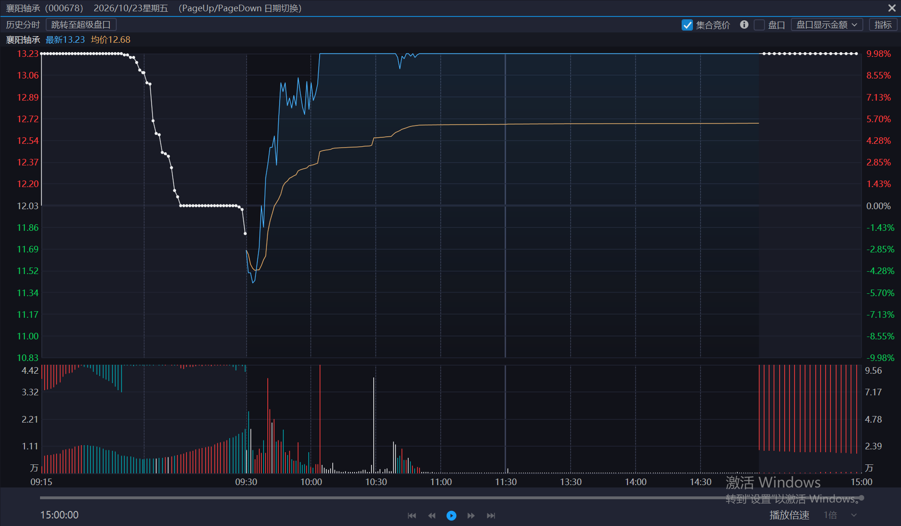
按我的回看，竞价低开，盘中放量攻板，板上仍有分歧，出现炸板、烂板。收在板上，并不意味着抛压已经消化。
经历前一日爆量分歧，三板竞价反而跳空高开、缩量转强。这才是我辨认二进三龙头的关键：与昨日应有的分歧相比，开盘表现更强。
三板盘中仍是烂板，四板却再次超预期高开。连续两次在分歧后得到正反馈，比孤立的一次高开更能支持我的龙头地位判断。三板、四板为本人口述回看，未据这张图补造开盘价或量比。
| 路径 | 谁先转强 | 我的参与点与验证 |
|---|---|---|
| 个股超预期，题材助攻 | 华电辽能：前日五板爆量烂板，次日竞价仍高开；同题材低身位股开盘后快速涨停。 | 助攻说明板块有呼应。按我的预案，仍要等华电自己出现主动进攻大单，才看半路买点。 |
| 个股超预期，龙头带动题材 | 大唐发电：按我的回看，它是题材内第一个涨停的，不是等小弟先替它确认。 | 前日身份与题材条件已经成立，次日竞价出现预案里的超预期缺口，竞价就是我的候选买点。缩量转强上板、题材内其他票随后是否响应，是开盘后的验证，不是竞价时已知的信息。 |
5月8日三板爆量，弱转强过程中开板，留下分歧。按我的回看，下一交易日反而跳空高开，随后缩量转强上板。先涨停能说明顺序，却还不能单独证明带动性：要再看它上板后，题材里的其他票有没有跟上。如果没有响应，就不能把个股独强写成带动板块。
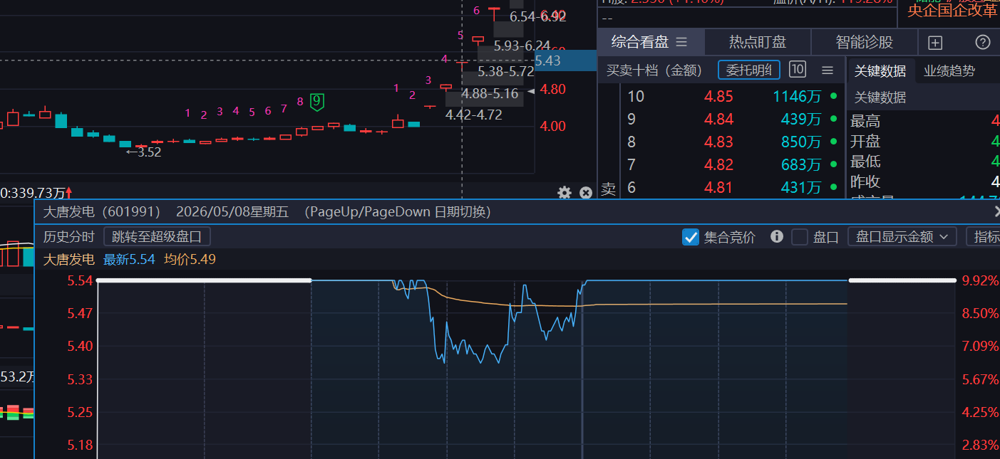
4月14日四板盘中反复开板，按我的回看，次日竞价反而高于预期。这个例子先记个股自身的预期差：还没有同题材先后上板的依据，也不把高开直接等同于越过昨高的缺口。
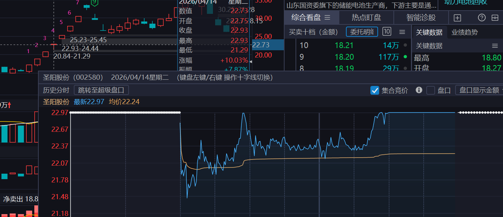
按我的回看，华电五板尝试弱转强，盘中却炸板、反复回封。爆量说明发生了换手，不能仅凭最后封住就认定次日一定强。
3月23日我看重的预期差，是前一天分歧这么大，竞价却没有走弱。高开让我把华电放到观察首位；没有次日开盘价与前日最高价的对照，不把它直接写成跳空缺口。
按我的观察，同题材低身位股开盘后有大单推动，很快涨停。这是板块呼应，还不是华电的买点。若华电仍是领涨核心，自己也出现连续主动大单、吃掉上方卖压，我的计划点就在这段上攻途中，不等封死才排。反过来，小弟封住而华电自己攻不动，就没有这个买点。
与闽发对照：闽发看当日T字换手后的回封；华电看前日已经爆量分歧，次日有没有重新聚起买盘。两例都看大单启动，但不是同一种量能预案。 闽发五板回封半路
所附历史分时标注为3月20日（周五）；3月23日（周一）的高开、助攻与大单进攻来自本人口述回看。未据前一日截图补写次日助攻股名、精确时刻、金额或个人成交。
闽发铝业前一天缩量一字到了极致，我原先预期五板是小高开、放量上板，结果却是涨停开盘、T 字放量回封，直接越过前方压力。五板是我观察龙头地位的节点：除非此前已经充分换手，否则我通常预期还要放量；本例的换手发生在板上，而不是上板之前。
先写清应该怎么开、实际越过了哪道压力。地位和预案都成立时，竞价可以尝试少量排单。
开板放量后，看连续进攻成交能否接住涨停价剩余压单。对我来说，开始回封是缺口仍有效、分歧正在转强的盘口确认；不是等封稳后排出长队才行动。
区分分歧时的放量换手与转强后抛压收敛，再看板块是否仍有呼应。三个时点是同一机会的不同确认程度，不是三笔成交。
11月6日个人心得 · 襄阳轴承、慈文传媒历史盘口对照，不计入本周交割
先判断今天预期是加速缩量板，还是放量分歧板。若预期是放量分歧板，我用“当前累计成交额 ≥ 该股起量板成交额 × 0.8”判断是否可以提前参与；其他条件均满足时，不必机械等到 1.0 倍才排。若预期是加速缩量板，不套用这条放量条件。
我的判断是，上板后仍有机会继续换手，按这次回看预计板上至少还会成交约 5000 万元，剩余量能可以在板上完成。这是排单时的预期，不是本帧已经实现的成交，也不是每个放量板都有的固定增量。
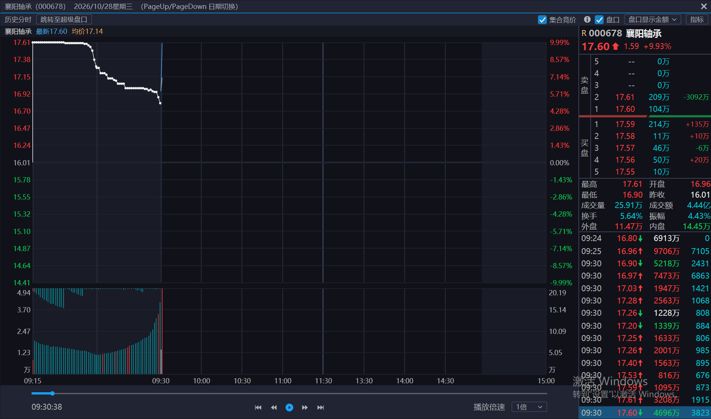
我的执行纪律：题材、地位、龙头七维与唯一性已确认，板型和量能也符合预案时，进攻成交超过涨停价剩余压单，就是按计划排单的触发点，不再等封板后长队出现才行动。1/4 是准备线，不是这里的触发线。此图只作历史训练，不据此推算自己的成交或收益。
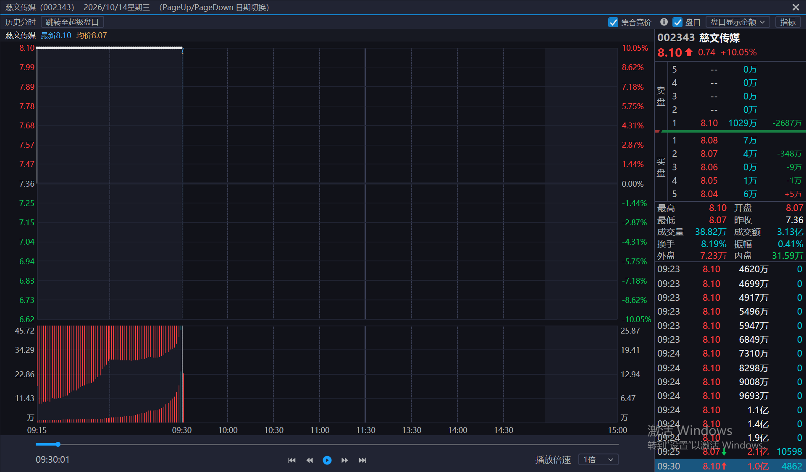
按屏显取整数，约 1 亿元相当于剩余卖一的 9.7 倍。我看重的是，大额成交正在往涨停价进攻，而那个价位仍有卖单可接。前者是已发生的成交，后者是当时的挂单；不能把成交明细认定为某个账户的一笔委托，也不能推断下一秒必然封住。
我的持仓纪律：开盘按预期换手、消化分歧，不因放量本身就走。封住一段时间后，本来预期继续锁住筹码，盘中却突然漏单，这就不是原先的开盘换手预期了。遇到这种情况，我优先退出，不等真正炸板才处理。
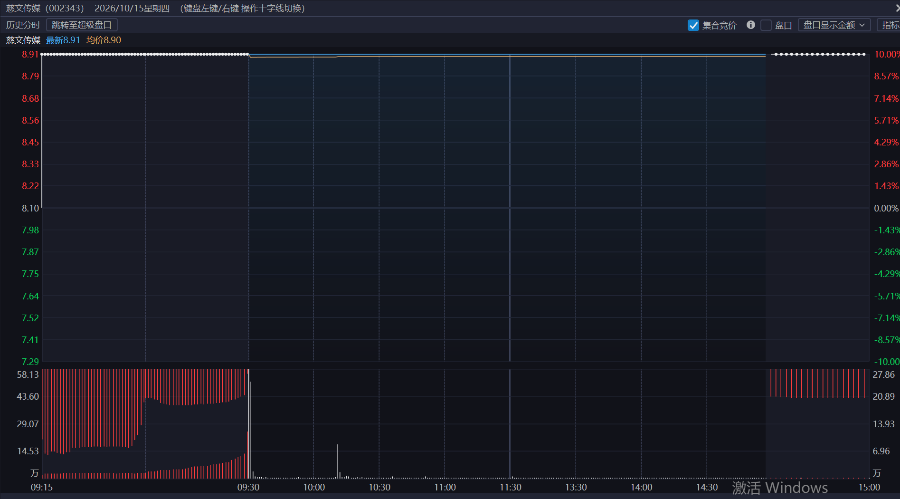
我把这种漏单视为大资金可能抢跑的警报，而不是确认谁在卖。图上能看见的是盘中突发成交，看不出交易者身份，也不能把它写成已经炸板或本人已经卖出。
对照10月14日：开盘进攻与剩余卖压逐次对照：盘前判的板型、首次满足量能条件的时点、大单启动的时点，以及我实际何时排单。区分“确认晚了”“执行慢了”和“及时排了但未成交”。
提前写清隔夜排的依据、次日要复核的条件和放弃条件。未确认唯一性的候选不因怕排不到而提前押注。
记录排单时看见的信号、排单后哪一项条件失效，以及实际撤单或成交回报。先训练判断，不编造固定撤单秒数、成交排位或能多赚多少。
2026-11-06 · 本人复盘 · 排板未成交
我看到了回封，也去排了板，但下单慢了一步，之后一直没排到。错过的是回封启动时的排单窗口；不能倒推出早一拍就一定能成交。周五仍为空仓。
涨停开，是竞价超预期；开板换手、放量回封，却在量能预期之内。前一日一字极度缩量，我原本就没把“五板继续缩量一字到底”当作基准。
先看题材：按我的复盘，光伏是当天最强题材：梯队完整，前排一字顶住情绪，后排有首板响应，有辨识度的个股集体回流。闽发仍是领涨核心，这才是我愿意研究五板回封的前提。
再看买点：小高开是基准，涨停开是超预期，只把它提到观察首位。真正的买点是T字开板完成预定换手、连续进攻大单开始吃掉涨停价卖压的那一段：按预案在回封途中排，不是押它缩量一字到底，也不是等封稳才排。这里确定的是执行条件，不是一定封住或一定成交。 对照回封启动时的盘口
助攻还是卡位：低一身位的四板票此前连走两个一字，换手不足，我不预设它能接住自己五板所需的量，断板风险仍在。但它不必自己晋级，才能在当天助攻闽发。本例我看到的是一字托情绪，没有看到它取代闽发领涨；若资金转去低位、闽发反而接不住抛压，就不能再把低位一字算作助攻。
| 竞价相对预期 | 开盘与走势 | 量能与承接 | 我的应对 |
|---|---|---|---|
| 超预期 | 原估小高开，却直接涨停开。先关注，不把开盘强度当作全天封稳。 | 看T字开板后能否在板上放量，缺口守住，大单能否接住涨停价卖压并启动回封。 | 题材强度和龙头地位仍成立、回封条件兑现，才按预案排单；放量却回封无力，就放弃这笔。 |
| 符合预期 | 小幅高开，先在板下换手，再向涨停价进攻。 | 看上涨过程是否有成交跟上、抛压是否被承接，而不是要求它开盘就封死。 | 小高开本身不是买点；等放量上攻和计划中的确认出现，没出现就继续观察。 |
| 不及预期 | 弱于预设的小高开，或开盘后走弱，始终不能按预想上攻。 | 缩量反抽、买盘不跟，或虽放量却接不住抛压，都不能当作分歧转强。 | 取消原先的回封排单计划，不因它是五板就抢；后面真有新的转强证据，再重新判断。 |
盘前先定正常剧本，再分别写：竞价怎样开｜开盘后怎样走｜应在哪里放量或缩量｜哪一刻触发、什么表现取消。
三种剧本是事后练习，不是三次交易。本例实际走的是第一种，排板未成交。
我把起量板成交额 2.00 亿元作为基准，乘以 1.3，得到本例“半放量板”的观察线 2.60 亿元。比较的是同一口径下的累计成交额，不是挂单额，也不是把图中某笔成交当作起量板基准。
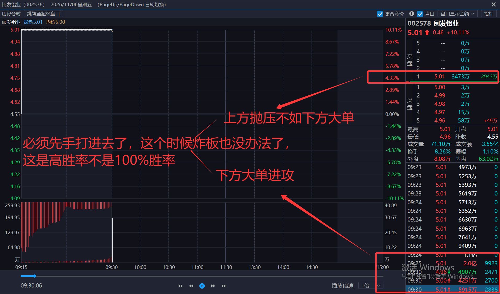
下方逐笔区可见价格从 4.96 元回到 5.00 元、5.01 元。结合涨停价上的剩余抛压，我当时的判断是下方大单在主动进攻，力度足以尝试回封。真正要辨认的是回封开始，而不是事后看到已经封住；单帧盘口不能证明卖压已全部消化或此后不会再开板。
我的触发条件：按我的复盘，四项前提此时已经齐了：半放量板的成交额达到参照线；梯队符合预案；低一身位的中位股一字顶住情绪；题材强度和节奏也符合预期。这时大单开始往回封，就是我计划里的先手排板点。等封稳再排，可能已经排不到。
“高胜率”是我对这次机会的定性，不是统计胜率，也不是百分之百。先手仍有炸板风险，早排也不保证成交。本次实际为排板未成交。
准备排单：我比较的是下方连续进攻大单的累计成交金额与上方涨停价卖一的剩余挂单金额。前者达到后者的 1/4，就开始准备排单。例如卖一压单 4000 万元，进攻大单累计到 1000 万元，就进入观察和准备阶段，不等于这时已经吃掉卖压。原先说的 1/3 已修订为 1/4。
触发条件：只有地位已确认、量能过线，梯队、一字情绪和题材节奏也都符合预案，我才看下一步：连续进攻大单超过当时剩余的上方抛压、回封开始，这才是我想抓的先手窗口。不是等卖一消失、买一排出长队，才用封单证明自己看对。
对照图二的 09:30:06，当时 5.01 元卖一还有 3473 万元；三秒后，同一价格已是买一队列。按我的判断，后两帧的累计成交额已经接近本例的全放量板水平。它解释了为什么我宁愿在回封启动时按预案排单，而不是等封板后才追。这里没有另设通用的全放量门槛。
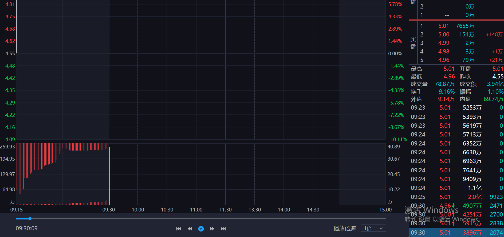
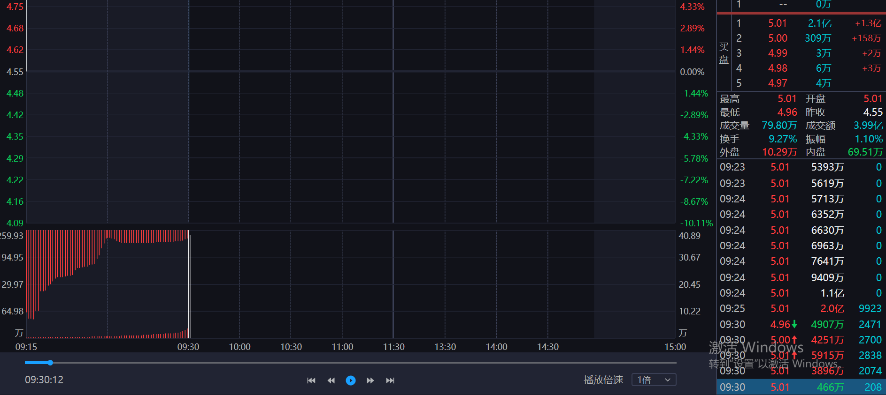
“约一亿大单”“七千万元是最后机会”“晚一秒就没了”是我对执行窗口的复盘描述。截图不能验证一笔独立亿元订单、精确排位或提前一秒就能成交。传智教育回封板作为这一比例的对照案例，未提供其同期盘口，不将闽发的数据套给传智教育。
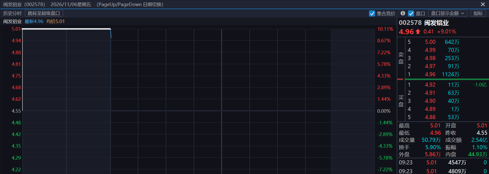
预期：按我的盘前预期，前一天一字板缩量到了极致，五板应当小幅高开，经换手放量再上板。五板是观察龙头地位的节点；在我的框架里，除非此前已经充分放量，否则重点看分歧在哪里释放，而不是只看板数。
实际：按我的盘中回看，闽发却直接涨停开盘，超出“小高开”的预期。开板后走出T字回封：这一次不是先在板下完成换手再拉板，而是在涨停价附近放量。我当时把重新封住理解为前方抛压得到承接。
比较实际开盘和事先写下的小高开预期，标出开盘缺口。本例涨停开是关注信号，不是仅凭开盘价就排单。
开板放量之后，观察回封大单何时开始主动攻板，能否接住板上卖压、守住缺口。我想捕捉的是分歧释放后重新转强的起点，不是等回封排队已很长才反应。
区分板上换手放量和重新封稳后抛压收敛，结合板块中低一身位的支撑，判断资金是否继续聚焦闽发。这里研究的是小题材的题材龙，不是给四板以上的补涨股另开买入例外。
闽发铝业与永贞股份这组，让我想起时代万恒与紫竹高科：关键不是低位首板一字，而是低龙头一个身位、已有辨识度的中位股用一字板托住情绪。不能因为两组结构相似，就把竞价都写成超预期：时代万恒此前两个缩量一字，零轴开在我的预期之内；随后放量上攻，次日再缩量一字。闽发这一次超预期的是直接涨停开。
下次分两步写预案：竞价超预期就盯住；地位确认、换手达标、大单开始回封才按计划排。提前准备不是提前押注，没成交也不因此追买。六至七板是我对这类小题材的高度预期上沿，不是必达目标或可计入的利润。
行情解释和排单经过来自本人回看；截图补充了回放时点的盘口，未提供本人委托时间、排队顺序或成交。三个观察点不代表三笔交易，不计模拟收益。
历史盘口对照 · 津药药业（600488）· 2026年4月1日 · 本人复盘心得，非本周成交
我关注的是约30–60亿元市值的龙头。若前三板中，起量板和半放量板的单日成交额在1.5亿至5亿元左右，我会提前准备：这类票盘子小，资金看法一旦趋同，卖盘可能很快被吃完；等看清封单再排，可能已没有成交机会。这是我的案例观察，不是见到这个成交额就买。
盘前自问：盘前先写：它是不是已经确认的龙头？前三板哪一天起量、成交多少？次日如果开板换手，什么量能和承接才符合预案？若直接一字封住、没有计划内买点，就记作无机会，不因为怕排不到而提前押注。
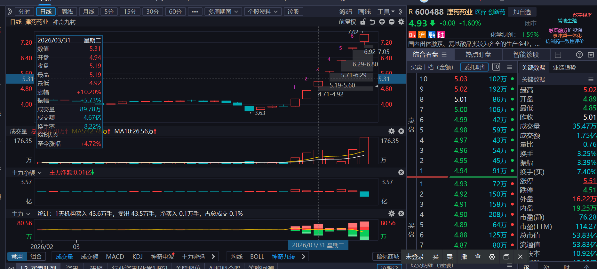
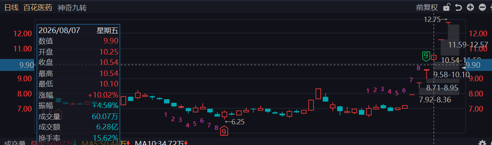
开板时，如果上方可见压单很薄，下方开始出现几百万元级的主动进攻，并且累计成交额已经达到或超过该股自己的起量板成交额，我才把它列为可参与的回封。几百万元不是脱离卖压、题材和地位的固定买点；本例也不套用闽发铝业的 2.60 亿元参照线。
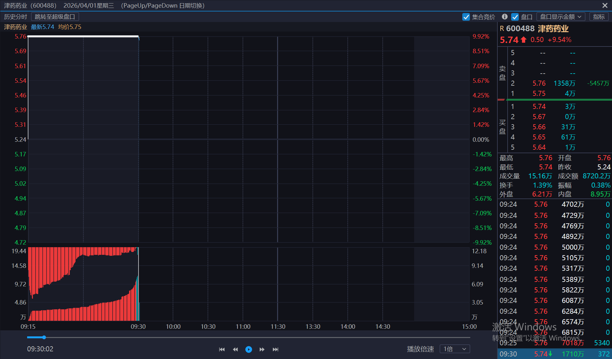
封板后若在涨停价直接换手，我比较的是下方抛压金额与当时涨停价的买一封单金额。只要前者不超过后者的 1/10，我可以先不跑，不把板上有卖出成交本身当作退出信号。这是持仓观察条件，不是新的买点；封单变化后要重新比较。
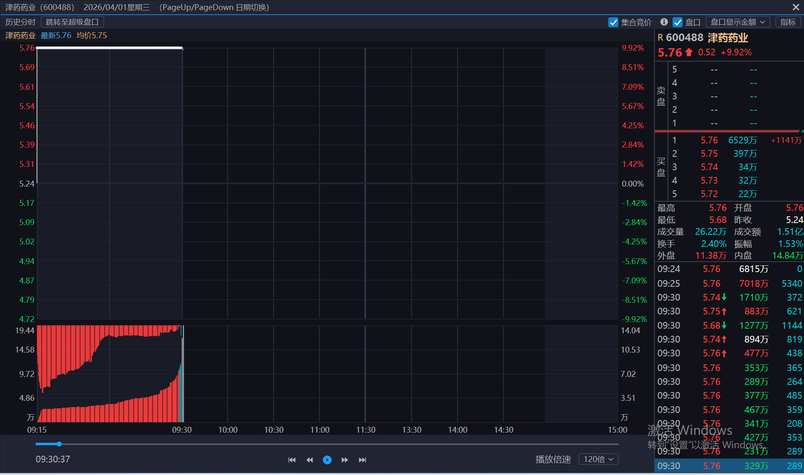
闽发的 1/4 是封板前“进攻大单 / 上方剩余压单”的准备线；津药的 1/10 是封板后“下方抛压 / 买一封单”的持仓线。两图没有给出起量板基准金额、抛压统计时段或完整逐笔记录，不能仅凭截图断定任何一条比例已经满足，也不据此补记买卖或盈亏。
对照闽发：回封前的排单窗口11月6日新增重点 · 本人本周复盘口述，按原意整理；只新增反思，不新增成交或盈亏。
错误在哪里：以为监管相关博弈的赚钱效应很高，就忽略失败时的损失。本人这次特别警惕：虽然存在赚钱机会，但失败可能遭遇跌停式负反馈，不能只盯收益。
本人执行纪律：不因过往赚钱效应随意参与。监管反核少做；若做，只做监管函首日首次反核上板确认，最多两成仓，次日退出；严重异动和其他绕监管情形不适用，失败风险仍须事先评估。
错误在哪里：同一题材里有两三只同身位个股竞争主升连板龙时，提前挑一只抢进去，把胜负交给自己尚不擅长判断的PK过程。不能因偶尔押对，就认为这个环节适合自己。
本人执行纪律：PK赛不碰，等角逐结果明确后再研究。先定龙，再核买点；PK胜出也不等于必须追买，没有合适机会就继续观望。
错误在哪里：把不熟悉的题材、不同波次或阶段的机会，当作自己擅长的主模式去重仓。本人熟悉的方向是题材第一波、主升二阶段的连板龙头。
本人执行纪律：不属于熟悉主模式，就不拿大仓位做；只有满足既有准入条件的机会才考虑小仓位，不把“小仓位”当作随意交易的许可。
与现行规则的关系：11月6日最新修订：补涨、切换最高两成，补涨仅限三板且地位确认，四板起不再新开仓；监管反核少做，仅限监管函首日首次反核上板确认，最多两成仓，次日退出，严重异动不适用。PK未决不参与，所有额度都不是必须用满；具体条件见“补涨、切换与监管函交易”模块。
这时候最大的错误就是简单，监管一定不要乱做，以为有很高的赚钱效应，确实有，但一旦失败，兄弟，直接跌停给你送，别搞，这是第二个同身位，有多2~3只在进行题材主升龙的连板PK的时候，PK赛不要去碰，PK赛角逐出来之后再去碰，不要提前去，因为你这样子，你要碰运气，运气好可以搞起来，运气差那就结束了。这个不要碰，这是第二个大忌，第三个是飞龙非我们熟悉的题材，连板主升第一波连板龙头，主升2阶段的就不要大仓位做，最好是小仓位的去做。对吧？是的呀，主要就是三个大的错误。
口述中的“飞龙非我们熟悉的……”按上下文整理为“非熟悉主模式”，未将其识别为某只股票名称。
“失败直接跌停”保留为本人的风险警醒，不改写成每次失败必然跌停的统计结论。本次不将这三类错误自动归因给新的股票或交易，也不新增止损比例。
超重点 · 11月4日新增纪律 · 本人明确指定为超重点的新增买入纪律。
一旦出现怕错过、想马上下单、先买再说的冲动，先停止下单动作，逐项回答下面的问题。回答不清或条件不满足，就观望；不能成交后再补理由。
结合文投控股的PK未决抢入，以及上海沪工的补涨定位与仓位反思：放量、快速拉升或触板不能替代地位与买点确认。上海沪工最新按补涨龙回看，具体窗口与仓位见11月6日新模块。
先说清题材归属和题材内地位，不能只回答它正在上涨、换手或上板。说不清就先观望。
同身位多个个股仍在竞争、结果未决，一律观望，不抢先入场；不以已有预案或小仓试错为例外。
按既定七维核查，不能凭放量或封板直接定龙。先区分题材主升龙与补涨龙，补涨龙不能沿用主升龙的大仓位档位；通过确认后仍须满足天时、地利、买点及风险计划。
11月6日修订：只有合格切换或已确认补涨龙的机会才研究参与，最高两成；补涨仅限三板，四板起不再新开仓。不是合格机会或地位未明，仍然观望。
盘前把可能的情景与对应动作想清楚，盘中核验条件，减少临场冲动和临时编理由。做好预案与买入前重新检查，缺一不可。
明确天时对应的仓位范围、地利对应的题材方向、观察标的及其地位。把正在PK的候选与已经确认的核心区分，不把观察名单当成买入名单。
预先推演走强、走弱、分歧延续或回流等可能情景：出现什么证据，才继续观察或考虑参与？反弹和下杀都要有应对分支，不只准备自己最期待的一种走势。
事前列出允许的仓位、入场条件、放弃条件和已有持仓的风险退出安排。实际情况不满足原前提时，不能因为已经做过预案就硬执行；本次不凭空填写价格、比例或损失阈值。
临近下单仍须完成上方买入四问。情景未出现、PK未决或依据不足就观望；计划外情况先重新评估，不为赶上拉升而临时放宽标准。
减少临时应变，是减少无依据的即兴交易，不是拒绝新信息或机械坚持失效计划。预案用于约束行为，不是预测必然兑现。
凡事预则立，不预则废。做好计划预案，减少临时应变。
两张附图强调复盘板块变化、熟悉代表标的、观察竞价强弱，并推演反弹与下杀的应对。以上清单是结合本人既有纪律的整理展开；截图中对竞价重要性的排序属于作者观点，不替换本人天时为主、地利为辅的框架。
以后买入之前一定要问自己问题，不能有预案也直接进去，防止自己随意交易以及出手本不该的机会，要问自己：买入的是什么题材的什么地位？他是龙头吗？若不是，仓位降到一成仓及以下。他是切换和补涨的好机会吗？若是，可以一成仓。若不是，请观望。这个是超重点。
一定要防止头脑一热就进去了。一定要用交易系统去改善随意性、冲动性，多少这种情况导致了大的亏损。一定要舍弃像这种的放量板机会。以后买入之前一定要问自己问题，不能有预案也直接进去：买入的是什么题材的什么地位？他是龙头吗？符合龙头七维吗？若不是，仓位降到一成仓及以下。他是切换和补涨的好机会吗？若是，可以一成仓。若不是，请观望。
以下为阅读材料摘要及整理说明，与本人新增纪律区分；不新增交易或盈亏数据。
附图强调依据交易体系行动，不因单笔失误就全盘否定体系。整理时也区分：遵守体系不保证盈利，规则本身仍需依据长期记录检验。
附图提醒不必参与每段行情、每次消息刺激和板块异动。与本人减少非优势交易的原则相呼应。
附图提到舍弃看似诱人的逆势拉升；本次吸收的是体系边界，而不是把任何逆势或放量形态都自动定义为错误。
附图强调用客观条件作决策，控制临场兴奋与追逐末段利润的冲动；不是给交易结果作确定性保证。
附图将交易体系的作用归纳为减少随意性、约束出手。记录可以修正的买点、确认和仓位问题，不把亏损简单等同于个人能力或品格。
超重点 · 11月4日归档 · 本人对源道演讲的学习吸收，以及对“超短核心逻辑”最近两篇帖子的转述；演讲与帖子原文尚未提供，未独立核验。
不能只停留在市场有赚钱效应的笼统判断，要明确什么环境、哪类标的、哪个节点、用什么方式参与，才可能将观察转化为可检验的交易计划。
以下为整理后的回答框架。
明确观察日期范围，以及机会集中在哪类题材、哪种地位、哪个阶段和哪种参与方式。把题材上涨与某种买卖方式能否获利分开。
列出代表样本、共性条件、切入节点、观察窗口和退出方式，让下一次出现类似情况时能辨认，而不是只写强、热、有人赚钱。
统一收益基准和观察口径，记录样本覆盖、失败案例及兑现难度。把实际可执行结果与盘中最高价区分；证据不足就标待验证，不硬凑结论。
将新增样本与此前同口径记录比较，写清变化证据，以及是否仍匹配自己的模式。没有清晰效应时，明确记录未识别到，不为了完成复盘而制造交易理由。
每日记录模板：观察区间：____；效应集中在：____；共性条件与参与节点：____；正反样本及统一收益口径：____；相较前期的变化：____；当前结论与待验证项：____；是否符合自身模式：____。
这是每日复盘的固定问题与整理后的回答框架，不代表已经完成当日市场扫描，也不要求每天找到可交易机会。
本人的学习重点是识别赚钱效应的持续与衰减：在适用阶段切入，跟踪回报是否下降，在效应接近消失时寻找下一个方向。整理时不假设衰减一定平滑、单向或可提前精确判断，需靠持续样本反馈修正。
本人从最近两篇帖子中观察到：五板之后，即使断板也有溢价，差别在多少；希望学习如何识别这种赚钱效应。
待验证假设，不是已成立的买入规则。
未取得两篇帖子、完整股票名单、观察日期与价格口径，不能确认样本是否全覆盖，也不能将“一定有溢价”写成普遍规律。盘中曾经冲高不等于在自己的买卖节点能获得净收益。
以下为整理后的研究步骤，尚非验证完成的交易规则。
先明确观察区间、市场阶段、题材和标的范围；记录全部符合条件的样本及失败样本，而不是只回看成功票。
明确是首次晋级五板、五板及以上，还是五板后的首个断板日；断板按收盘未封板还是盘中开板定义。这些口径待原帖与本人确认，不自行选择。
明确相对哪一个价格、观察哪一天：例如前收盘、计划成交价或实际成本；开盘、盘中最高和可执行退出价分别记录，不能混作同一种溢价。
区分能否买到、能否卖出、交易制度约束、费用滑点、期间不利波动与净收益。记录样本数、成功比例及盈亏分布；没有数据时不填写胜率或预期收益。
明确参与前提、确认信号、允许仓位、退出与失效条件，观察未验证前不直接转成实盘指令。“达到五板”本身不能替代龙头七维或买前检查。
跟踪溢价幅度、覆盖比例、兑现难度及负反馈是否改变。衰减阈值和停止条件待样本验证，不编造连续几次失败或固定百分比作为规则。
观察效应 → 定义口径 → 验证样本 → 写清计划 → 跟踪衰减 → 失效时停止沿用原假设。
寻找下一种赚钱效应，不等于必须参与新的交易模式，也不自动授权低位切换。仍以本人优势模式为边界：PK未决不入场，买前逐项检查；非龙头只有合格切换或补涨机会才可一成及以下，非主模式合计上限继续有效。
赚钱效应这个从源道的演讲中学到很多。一定要把赚钱效应给具体化、准确化，直到可以执行。赚钱效应是会逐渐降低下降的，所以要准确切入，然后直到快要消失再去寻找下一个赚钱效应。比如“超短核心逻辑”最近两篇帖子中，发现了五板之后即使断板都一定有溢价，只是多少的问题，那这个就是一个赚钱效应，这个是我需要去学习的。这个也是超重点。
赚钱效应的寻找是大道，这个方面我也要加强。要每天问自己近一段的赚钱效应在哪里？具体化和准确化的体现是什么？
11月4日归档 · 本人新增心得及两张阅读材料；以下为心得整理和训练框架，不是当日标的交易指令。
预期先写在计划里，实际表现再与它对照；不能因持仓、亏损或怕错过而临场移动标准。
后排被动跟涨：不参与。如果是前排先拉、后排才跟，后排的转强可以判断对，却仍然没有我的买点。前排一旦转弱，跟涨的票可能迅速回落；我不因为它也上板，就把它当成主动领涨。 对照百洋股份案例 · 闽发五板竞价三种预案
大成交量品种快速转强：先看抛压。体量大、前期成交也大的票，次日快速上板时，我要考虑前面获利的筹码是否会借这次拉升卖出。拉得快，只说明价格上去了，不说明抛压已被消化。若看不清卖盘能否被接住，就不把这次上板当作买点；这是炸板风险，不是断定一定会炸。
本人新增学习目标；以下为整理后的复盘问题，不是对当前市场节点的判断。
整体情绪、板块演化与个股竞争分开记录，不把一只票的强弱等同于整个市场。也区分当前所处阶段与促成变化的具体节点。
结合前文的竞价、板块与核心表现、赚钱效应及负反馈记录，说明为什么判断为分歧延续、回流、修复或其他状态。没有足够依据时写不确定，不倒推一个确定答案。
保留当时的时间、判断与依据，再对照后续表现。重点区分判断错误、证据出现得太晚和执行偏离，逐步积累自己能辨认的正反案例。
把节点与近期赚钱效应、预期等级和既定模式对照，再决定观察还是执行计划。看不清时不新增交易理由；已有持仓继续遵守原风险安排，PK未决不抢先入场。
节点记录：观察时点：____；判断层级：____；此前状态：____；当前阶段与关键变化：____；支持/反对证据：____；后续确认/失效条件：____；对应赚钱效应：____；计划动作：____；事后验证：____。
尚未提供本次当日盘面数据，当前节点不在这里填造；先把识别节点列为持续训练项。
本人原则：买入或持有。整理为两种情形：未持仓时，须原计划入场条件与买前检查同时通过；已有持仓时，按原计划持有，不把符合预期自动解释为需要加仓。
本人原则：买入或持有。先说清超出的是哪项预期、证据是什么；仍检查价格是否在原计划允许范围、PK是否已结束、是否符合龙头七维与仓位边界，不能因为强就无条件追入。
本人原则：卖出。已有持仓按事前定义的卖出与失效条件执行，不为回本拖延；尚未买入则取消对应买入计划。低于和严重不及的具体判据尚未提供，不自行填入涨跌幅、时间或量能阈值。
整理补充：证据不足时不要强行归为符合或超预期。未持仓继续观察；已有持仓仍遵守原风险退出安排，不用等待新判断来豁免既定失效条件。
以下为结合本人薄弱项整理的训练步骤。
分别写出整体情绪、题材板块、标杆股与目标股的预期表现，以及什么变化会推翻判断。区分观察项与真正触发动作的条件。
对照计划记录实际强弱及变化，注明证据与观察时点。将整体、板块、核心股和目标股放在一起比较，不只凭一只票的高开或一笔封单判断全部情绪。
继续核对竞价判断是否得到走势支持：是分歧延续、局部修复，还是板块与核心共同回流？先保留判断和理由，避免事后只凭结果改写当时预期。
分别检查：预期是否明确、观察是否准确、判断是否有证据、执行是否遵守计划。区分看错情绪与看对但没有执行，积累正反样本；训练不要求每天用实盘试错。
盘前预期 → 竞价证据 → 预期等级 → 计划动作 → 实际动作 → 开盘后验证 → 收盘纠错。
本模块补充计划之后的观察与执行，不覆盖买入前必答：PK未决仍观望，非龙头参与仍须满足合格机会和一成及以下限制。符合预期不等于没有风险，预期标准须事前明确。
做好交易计划之后，买卖点就参考预期管理，符合以及超预期就买入并持有，低于预期或者严重不及预期就卖出。在这里我还比较弱，集合竞价看趋势和分歧回流，这个仍然需要加强，这个方面一定要加强。
怎么判断节点以及当前节点是什么，这个也要多加学习。
附图强调通过盘口、标杆股与热点股表现观察情绪强弱和方向，并关注整体与热门板块的情绪。这里只整理学习要点，不把截图对竞价时长的表述作为交易时段规则，也不假设竞价能够确定全天走势。
11月2日历史复盘基线 · 仓位修订以11月6日“补涨与监管边界”为准
原非主模式两成总限制与11月4日一成限制保留为历史版本。现行：补涨、切换最高两成；监管反核少做，仅限监管函首日首次反核上板确认，最多两成仓，次日退出，严重异动不适用。查看完整条件与例外。
主线题材至少小题材及以上 → 第一波 → 主升二 → 题材连板龙。重点研究3进4、4进5、5进6，板数本身不等于确认。
先满足主模式与龙头七维，再按本人规则区分：可能唯一可半仓，确认唯一后可至满仓。这是允许档位，不是必须用满；损失预算与退出条件仍须先明确。
回答不清就不追加。回本愿望、反弹预期、可能回封、曾经是龙头，都不能代替新增证据。
无合适机会、看不懂市场、情绪或状态不到位时，允许空仓。定龙前耐心等待，确认与原计划相符后再执行。
11月4日归档 · 本人反思与截图；11月6日补入table-这周.xlsx，核实文投11月4日两笔买入，11月5日卖出800股已由后补截图核实。
本人进一步明确：目前不擅长在PK过程中选出最终胜者，就不参与这个环节。同题材、同身位多个个股仍在PK时，切忌抢先进去；只研究PK结果明确后的机会。追求的是确认，不是单纯先手。
按本人口述，同一题材、同身位有多个候选共同竞争，其中有一字板，自己提前参与了换手板，事后认为判断失误。换手形态本身没有完成龙头身份的确认。
本人明确本次仓位低于两成，说明仓位控制有所改进。但小仓位不代表买点正确；这只是本人对本次仓位的描述，不据此推算精确比例、账户损失或全部非主模式合计仓位。
承认目前不擅长在竞争中选胜者，把该环节从自己的参与范围中剔除。不以“一字在前，所以去做换手”、已有预案或小仓试错作为抢先入场的理由。先等竞争结果明确，再按龙头七维与原计划判断买点；没有合适买点可以继续不做。
先手是确认后的及时执行，不是确认前的猜胜负。PK胜出也不是无条件追入，仍须符合既定买点、仓位与风险边界；确认只能改善依据，不能保证结果。
文投的主因是同身位PK未决就抢入。上海沪工按11月6日本人最新定位作为补涨龙回看，重点核查补涨地位、三板窗口和仓位；不再把两只票不加区分地归为同一种模式。
本次口述“仓位没那么重要”，结合前文低于两成及“否则又亏大了”，按“仓位没那么重”整理。轻仓限制了风险暴露，但不能证明买入逻辑成立。
本人反思：本人确认本次提前参与换手板的案例为文投控股：还没有完成龙头确认，就在上板时抢先手。
截图可见：截图显示早盘快速冲至上沿后回落、随后反复波动；可见分时与成交列表只到约11:30，不当作全天最终走势。图中没有明确的个人成交标记。
仍待核对：交割已核实11月4日09:32:56、09:33:41以2.71元各买400股；总成本2178.02元。退出成交与最终盈亏待补。
本人反思：11月6日本人明确认为上海沪工是补涨龙。此前未定龙抢板的评价保留为历史反思；本次改按补涨模式核查，三板且地位确认才研究参与，最高两成，四板起不再新开仓。扳回大业股份错误的动机及第二笔加仓反思仍保留。
截图可见：截图选中2026年11月2日，分时显示早盘高位回落；图上可见“买入19.310*200”及B/S标记。它是截图标注证据，不足以还原完整成交过程。
仍待核对：交割已核实11月2日两笔各100股、价格19.31元；11月3日15.60元卖出200股，完整交易含费亏损758.63元。
历史评价按日期保留；上海沪工的最新定位以11月6日补涨龙反思为准。该定位不证明当时买入已满足地位或板数条件，仍应结合当时记录逐项回看。
现行边界：11月6日最新修订：补涨、切换最高两成，补涨仅限三板且地位确认，四板起不再新开仓；监管反核少做，仅限监管函首日首次反核上板确认，最多两成仓，次日退出，严重异动不适用。PK未决不参与，所有额度都不是必须用满；具体条件见“补涨、切换与监管函交易”模块。
截图讨论因浮盈而不断提高盈利预期、舍不得执行原计划的情形。这是阅读材料中的案例，未确认本次交易曾有浮盈，不能记为本人本次盈利回吐。
截图提出保护浮盈和上移退出位置的思路。本次仅作阅读摘意，不生成新的止盈止损比例，也不把保护浮盈写成一定不会转亏的保证。
截图提醒：亏损后的急躁、卖出后上涨的不甘，可能带来为扳回损失而频繁换股。它与此前上海沪工的反思相呼应，但未据此断言本次交易也由同一动机驱动。
11月4日 · 本人心得，结合所附《悟道·成长》仓位管理页面阅读吸收。
好机会按规则配置仓位，天时地利不好就空仓等待或轻仓。
先手不是在身份未明确时抢跑。按自己的龙头七维完成确认，才进入计划中的执行节点。
本人强调“龙头七维定的那一刻就必须进去了”：在模式、价格与风险条件仍符合原计划时及时执行，而不是把等待确认变成不断拖延。此处的确定性指交易依据更明确，不代表结果确定或任何价格都值得追入。
不在确认前提前押注，也不为吃尽最后一段利润而拖延退出。“不赚行情的前后1/8美元”保留为本人原话，按不追求吃完整段行情理解；不换算为固定12.5%的买卖阈值。
在自己擅长的模式内，机会质量与确认程度相匹配时，按既定规则分配仓位。天时地利都不好，就空仓等待，或轻仓保持盘感；不要求每天都有交易。
先判断整体市场环境与情绪阶段，再结合题材、板块条件，确定本次参与的仓位范围。不能只因局部出现强票，就忽略整体环境的约束。
在允许的仓位范围内，选择题材、板块中适合自己模式的方向；方向明确后，再用龙头七维确认具体标的。
先明确能够承担多少风险，再决定进攻哪个方向，随后定龙、等买点。仓位范围不是必须用满的任务，地利好也不自动意味着可以重仓。
以上为本人一句心得的整理展开。截图作者列出的50%–80%、0%–30%及少数满仓情形，仅为阅读材料中的作者经验，未转为本人新的仓位档位。
现行仓位边界：11月6日最新修订：补涨、切换最高两成，补涨仅限三板且地位确认，四板起不再新开仓；监管反核少做，仅限监管函首日首次反核上板确认，最多两成仓，次日退出，严重异动不适用。PK未决不参与，所有额度都不是必须用满；具体条件见“补涨、切换与监管函交易”模块。
阅读材料与本人规则分开：截图作者关于不考虑止损、止盈的表达，不自动转为本人的交易规则。本次吸收的是仓位控制、机会选择与耐心等待，不取消已有风险退出安排。
先手的前提是定龙。龙头七维定的那一刻就必须进去了，先手才确定性，不赚行情的前后1/8美元。不早进不晚出。这个仓位管理的非常对，好机会下重仓，天时地利都不好那就空仓等待或者轻仓保持盘感。
主要天时次要地利定仓位范围，地利定进攻方向。
11月6日案例心得 · 本人口述案例类比与预期管理心得；未独立核验两组标的的具体行情日期、板数及量能，不新增实际成交。
对照案例：闽发铝业与永贞股份 / 时代万恒与紫竹高科
观察的不是低位首板一字，而是低龙头一个身位、已有中位辨识度的个股一字顶情绪，与龙头的量价表现相互印证。
本次强调的是相对龙头低一个身位的中位股，不是随便找一只低位首板，也不是把所有后排一字都视为相同信号。中位辨识度是这次类比的重要条件。
按本人回看，紫竹高科一字顶情绪，对时代万恒形成支撑；闽发铝业与永贞股份这组呈现相似的小题材走法。两组可作为对照案例，但相似结构不代表后续路径和收益相同。
本人认为，这类题材持续时间和空间可能有限，但结构相对标准，若符合自己熟悉的小题材连板龙模式，仍有研究价值。是否参与取决于当时确认和预期管理，不因题材小就否定，也不因形式标准就直接买入。
零轴开是符合预期，不是超预期。以下仅为本人的阶段回看，尚未逐日核图。
| 阶段 | 本人观察 | 预期管理含义 |
|---|---|---|
| 前置量能 | 此前两个缩量一字板 | 按本人口述记录；这一量能背景是理解随后开盘预期的前提。 |
| 竞价开盘 | 零轴附近开盘 | 本人明确修正：这里属于符合预期，不是超预期。不能脱离此前缩量、盘子大小和筹码交换需求，仅凭未高开就判弱。 |
| 日内演化 | 开盘后放量上攻至涨停 | 继续观察实际承接和上攻表现，与低一身位一字顶情绪的板块反馈结合，而不是只凭开盘价下结论。 |
| 次日表现 | 随后再次缩量一字 | 按本人口述回看，其强度表现使排队成交困难；这是事后描述，不代表事前一定能判断或排到。 |
针对小盘、容易缩量一字的标的，提前研究预期、候选与排单方案；这里的“提前”指提前准备，不是提前押未决PK，也不能跳过龙头七维与买入前检查。
一般观察框架可记录“中位一字支撑＋龙头超预期”，但时代万恒本例的零轴开应记录为符合预期。先写清基准，再根据竞价与盘中反馈修正判断。
本人将这类小题材小龙的六至七板视为高度预期上沿，倾向于不再贪更远空间。这不是已验证的统一高度规律，也不意味着必须等到六七板才能卖；若板块支持或原预期先失效，仍按原退出纪律处理。
现行边界：这是小题材结构与预期管理的补充，不推翻“三大交易禁忌”：同身位PK未决不参与，非熟悉主模式不重仓。低一身位的一字板是观察线索，不单独构成龙头确认、买点或仓位放大的理由。
待补两组案例的具体交易日、连板身位和分时量价对照，才能做独立核验与图上标记。本次不填写未知日期、准确流通盘数据、买卖价格、排单时间或收益空间。
其实这波闽发铝业和永贞股份有点像，当初时代万和和紫竹高科那一波，就是低一身位的做了，不是低位首板做一字板，是低身位的，第一个身位的中位股，中位辨识度做了一字板顶情绪，当时紫竹高科顶了一波一字板情绪，把时代万恒给顶上去了，他这两个题材走得有点像，就是一个小题材的走法，但标准度还是挺高的。是他这个标准度还是挺高的。 所以如果你从这里看，小题材里面有一个比较经典的，当你的中位或者后排有一个一字顶上去的时候，龙头也超预期，其实当时时代万恒并不是超预期，就是符合预期，因为时代万恒那波是两个缩量一字板，两个缩量一字板之后，本身也是小盘子，零轴开，因为它没放量，其实是对的，零头开之后，直接放量拉上去，隔日又缩量一字，这种很恐怖，就是这种就确实是没办法，你很难打得到。 这种题材，小盘股基本上你得排，提前打，做好预期管理。它虽然走的不久，但是一个小题材的小龙，其实是可以做的，基本上，你做到6版7版就是一个上限。这就是上限，然后你就走，这个利润也是很不错的。
“时代万和”按上下文统一为“时代万恒”，“零头开”按上下文整理为“零轴开”；未替闽发铝业与永贞股份指定本段未明确的龙头/中位角色。
11月4日 · 本人指定的复盘参照案例，按小、中、大题材分类记录，不代表市场统一分类。
大题材的四组案例分别保留，不合并为同一种演化路径。具体行情区间、划分依据及各组差异，后续随本人复盘补充；本次不新增行情、买卖点或收益推算。
本人一句心得，结合两张所附阅读材料整理；并非当前热点推荐。
从提出背景、催化来源、影响范围及参与层级理解热点，而不是只记住题材名称或消息标题。以上是结合附图对本人心得的展开。
思考催化可能影响哪些环节、能否扩散、是否可能持续演化；将这些写成待验证的情景，不把想象的高度当成必然兑现的行情。
附图明确提醒，个人理解还须体现在市场情绪与选择中，结合板块强度、个股强度及后续分时走势判断。市场没有给出相应反馈时，不凭故事大小认定机会已经成立。
结合本人现行纪律：热点值得观察，不等于某只票可以立即买入。仍须检查题材内地位、同身位PK结果、龙头七维及买点；想象空间不能豁免买前检查。
理解形成判断，想象形成情景，市场反馈检验判断，交易系统决定是否参与。
本模块补充热点判断方法，不改动原有小、中、大题材案例分类，不补造热点级别的量化阈值，也不把附图中的历史举例当作当前市场事实。
11月4日 · 本人新增心得，按原意记录，非已验证的收益规律。
我的预期是：二波行情往往只有一轮。错过这一轮就放过，不预设还会反复，也不拿跟涨票替代龙头。
盘前自问：是它先转强、带动同题材的票跟上，还是前排先动，它才被带起来？如果只能看到后者，哪怕跳空高开或突破前高，我也不做。
反例｜百洋股份：按我的回看，是九阳股份等前排先走强，百洋才跟上。它有涨幅，但没有表现出带动别人的主动性；前排一旦转弱，跟涨就容易失去支撑。这是辨别案例，不是本周成交。
现行仓位边界：二波仍沿用非主模式两成额度，不因本次修订自动提高。监管反核亦以两成为上限，只限监管函首日首次反核上板确认，不能与二波混用。
待细化的执行口径：新高的参照区间、跳空的参照价格、爆量的比较基准，以及买卖信号的观察时点尚未定义。先保留为模式笔记，不擅自补成机械下单条件。
本人关于半夏1992演讲《从10万到100万的过程》的学习吸收，以及后续个人思考；并非演讲逐字稿或独立核验记录。
这里的断退路，是断掉不擅长、没有优势却反复参与的交易模式，不是放弃止损、资金安全边界或把自己逼到必须盈利的境地。
把不擅长的模式从主动交易范围里减掉，不因行情热闹就不断寻找新玩法。适应市场可以是降低参与度，而不一定是换模式。
市场风格与优势模式不匹配时，轻仓或空仓都可以是正常执行；风格契合，也不等于任何一笔都能盈利。
把认知、执行和仓位匹配起来。回撤先给情绪减负，不用扩大仓位或临时换打法来追赶损失。
| 主题 | 整理后的心得 |
|---|---|
| 确定自己的优势 | 目前我更擅长题材龙头，而不是切换和补涨。先明确自己做哪类交易，减少不舒服、不熟悉的领域，让简单且经过检验的事情重复发生。 |
| 分清风险与把握 | 我的体会是：龙头风险大，但自己对核心地位的判断更有把握；低位切换与补涨看似位置低，却有更大的选择不确定性。这是个人模式体会，不表示龙头必然安全，或低位天然低风险。 |
| 减少非优势交易 | 从演讲中吸收的例子是：半夏砍掉首板、专注二板后才开始稳定向上。对我的启发不是照搬二板，而是找出适合自己的领域，砍掉消耗收益和信心的交易。 |
| 仓位匹配确认程度 | 确定性高的多买，确定性低的少买。这里的确定性应有可检查的模式条件与新增确认支撑，不能只靠主观自信；仍受11月2日确认的仓位上限及退出计划约束。 |
| 回撤时先减压 | 回撤较大时，先休息、稳定情绪，必要时减少账户资金压力，再考虑恢复交易。笔记中的10%或15%只是举例，尚未设为新的固定触发阈值；取钱也不是交易盈利，需单独记录出金。 |
| 接受模式的周期 | 适合自己性格的模式，遇上契合的市场风格才更容易发挥优势。风格不合时，允许少赚、轻仓或等待，不为了参与而临时切换到自己并不擅长的打法。 |
| 等待也是选择 | 切换风格不等于获得优势：换过去以后，如果仍不比其他参与者更擅长，盈利依据在哪里？有些问题不必靠增加交易来解决，等适合自己的那阵风来。 |
与现行规则的关系：11月6日最新修订：补涨、切换最高两成，补涨仅限三板且地位确认，四板起不再新开仓；监管反核少做，仅限监管函首日首次反核上板确认，最多两成仓，次日退出，严重异动不适用。PK未决不参与，所有额度都不是必须用满；具体条件见“补涨、切换与监管函交易”模块。
半夏1992的演讲吸收 从10万到100万的过程。龙头风险大但确定性高，我更擅长龙头而不是切换和补涨；低位切换和补涨风险小但不确定性高。确立自己要做什么样的交易，自己舒服的领域去做就会有信心一点，简单的事情重复做，检查模式是不是对的路子。把自己不舒服的领域砍掉，减少非优势交易，比如半夏砍掉首板之后专注2板才开始稳定盈利向上。确定性高的多买，确定性低的少买。回撤比较大的时候，比如10个点、15个点，就休息一下稳住情绪，取点钱再重新战斗，要给自己解压和减负。适合自己性格的交易模式才是最好的，这个模式契合当前市场的交易风格就能赚很多，不契合的话会少赚，这都是周期。
股市不是找出路，而是断退路。你在切换自己交易模式以适应市场风格的时候，要知道只有比别人更擅长才能赚到钱；如果切换风格之后不比别人擅长，那如何赚钱？市场的风格不是你擅长的模式的时候，很多时候轻仓或者等一等，等到那阵风来。很多问题都是解决不了的，等一等就过去了。不是一定要找出路，而是断退路，把自己不那么擅长的模式断掉，知道什么东西玩不了，然后不继续玩了，慢慢剩下来的那些东西，长期简单坚持。
本人操作：交割核实：11月2日09:47:14、09:48:19以19.31元各买100股；11月3日09:32:51以15.60元卖出200股。
本人反思：本人认为第一笔可以作为试错，但第二笔没有新增唯一性依据，不应扩大仓位。本人判断其补涨质量不足，不是应该重仓的题材龙。
下次纪律：每次加仓都必须回答：发生了什么新事实，使这次加仓合理？不能因为已有仓位、亏损或回封预期继续追加。
11月4日补充反思：上海沪工的操作中，存在想弥补大业股份上一笔错误的动机。结合原复盘中第二笔缺少新增唯一性依据却继续加仓的问题，需要把扳回心理与真正的交易依据分开。
两笔买入及卖出已核实，含费完整交易亏损758.63元；精确账户仓位与账户日收益仍需资产数据。
本人操作：交割核实：10月30日以19.61元、19.57元各买100股；11月2日13:10:49、14:51:44以17.57元各卖100股，已完成卖出。
本人反思：把绕异动博弈与主升题材龙混为一谈，给了不匹配的仓位。本人认为这类博弈容易遇到大幅回撤，应减少参与；所谓低胜率、低盈亏比是本人经验评价，不是统计结果。
下次纪律：绕异动、出异动后博弈、龙头二波都不能取得主模式仓位豁免。先核原逻辑与失效条件，不等待必然出现的冲高。
含费完整交易亏损425.83元，属于跨周整笔损失，不作为11月2日账户当日亏损。
本人操作：本人明确确认11月2日没有买入。
本人反思：封板本身不足以构成自己的高质量机会；观察、讨论与真正成交分开。
下次纪律：没有符合模式的机会可以不做；支线或抱团若参与，仍占用非主模式合计额度。
没有确认买入，不生成成交、持仓或盈亏记录。
本人11月4日补充，针对11月2日操作的事后反思；不新增成交或损失数据。
上一笔的错误，不是下一笔的买入理由。每笔交易重新按模式、确认程度、仓位边界和退出条件独立评估。
假如没有大业股份那笔交易，我还会买上海沪工吗？还会用同样的仓位、在同样的节点加仓吗？
整理后的自查建议：当下单理由变成扳回上一笔，先暂停新增风险，重新核对计划；不能靠换一只股票或加大仓位来修复上一笔判断。
截图强调用交易体系约束情绪。本次记录具体行为和动机，不把交易错误归结为道德上的好坏；暂停动作是整理建议，未新增固定停手时长或亏损阈值。
今天两种错误的共同根源是非主模式重仓。上海沪工是补涨参与后的无新增确认加仓；大业股份是绕异动博弈仓位过重。小仓试错与扩大风险必须分开评价，不能用反弹、回封、曾经是龙头等理由替代当下确认。
| 维度 | 本人总结 |
|---|---|
| Keep 保持 | 聚焦理解的龙头模式；接受小仓试错与空仓；区分首次试错和追加仓位。 |
| Improve 改进 | 先定题材级别、波次和阶段，再定仓位；每次加仓重新核查确认依据。 |
| Start 启动 | 减少交易，等待定龙；无合适机会、看不懂市场或状态不佳时允许0仓；下单前写清损失预算。 |
| Stop 停止 | 非主模式重仓、绕异动大仓、以封板或反弹预期代替唯一性、用加仓补救原判断。 |
下表保留当时确认版本，不能与后续规则混用。补涨、切换及监管函仓位以11月6日最新确认为准。查看现行参与窗口、仓位和退出要求；仓位档位不代表收益保证。
| 规则 | 确认内容 |
|---|---|
| 唯一主模式 | 主线题材至少小题材及以上、第一波、主升二、题材连板龙。重点研究3进4、4进5、5进6，但板数不等于全部前提成立。 |
| 非主模式总边界 | 切换、补涨、补涨3、龙头二波、监管、绕监管、支线等所有非主模式持仓合计不超过20%，不是每只分别20%。 |
| 唯一性分档 | 按文档最终确认：先满足主模式与龙头七维；可能唯一时可半仓，确认唯一后可至满仓。50%/100%指账户仓位档位，不是逐笔追加比例，也不是必须用满。 |
| 已替代的说法 | ‘第一笔固定八成’已被最终分档替代；早期主升三重仓说法不再沿用。旧周报记录保留为当时版本，不覆盖历史。 |
| 风险前置 | 模式、唯一性、入场触发、仓位、最大亏损和失效动作须事前明确。文档尚无具体损失预算及退出价格，不自动生成可执行买卖指令。 |
| 主题 | 本人总结 |
|---|---|
| 少 | 结果往往取决于少数关键交易。减少不理解、不熟悉和不符合边界的交易，把注意力集中到能解释的机会。 |
| 零 | 没有机会、看不懂市场、情绪或状态不到位时，空仓是完整的决策，不为维持交易频率开仓。 |
| 慢 | 定龙前等待竞争结果和辨识度形成，不用买得早替代地位判断。 |
| 快 | 确认与事前计划相符后再执行；出手重的前提仍是模式、唯一性、损失预算和退出清楚。 |
| 题材与模式分开 | 本人将题材分为大、中、小、支线；中大题材可能有补涨或二波，但这些仍不是本人主模式，不能因题材大而放宽仓位边界。 |
| 学习确认过程 | 本人希望研究四板后确认龙头的过程；学习等待、确认和执行，而不是把四板以后当作必买规则或只复盘成功案例。 |
| 本人简称 | 模拟路径 | 本人估计 |
|---|---|---|
| 大业 | 六板进入、七板退出 | 10个点 |
| 襄阳 | 四板进一半、五板进完、六板退出 | 15个点 |
| 时代 | 四板进一半、五板进完、六板退出 | 15个点 |
按文档最终确认，这三组是本人按模式回看的模拟结果，不是实际已实现收益；没有新增成交证据，不覆盖此前交割和机会案例，也不累计到账户收益。
三笔完整交易含费亏损合计 -1,504.43元：大业股份 -425.83元，上海沪工 -758.63元，文投控股 -319.97元。
这不是全周或11月2日账户日收益。大业跨周持有，期初已经体现24.04元浮亏；全周账户损失估算为1,480.39元（-12.55%）。周四清仓后现金为10,319.97元，周五无成交。
查看逐票成本及回款依据